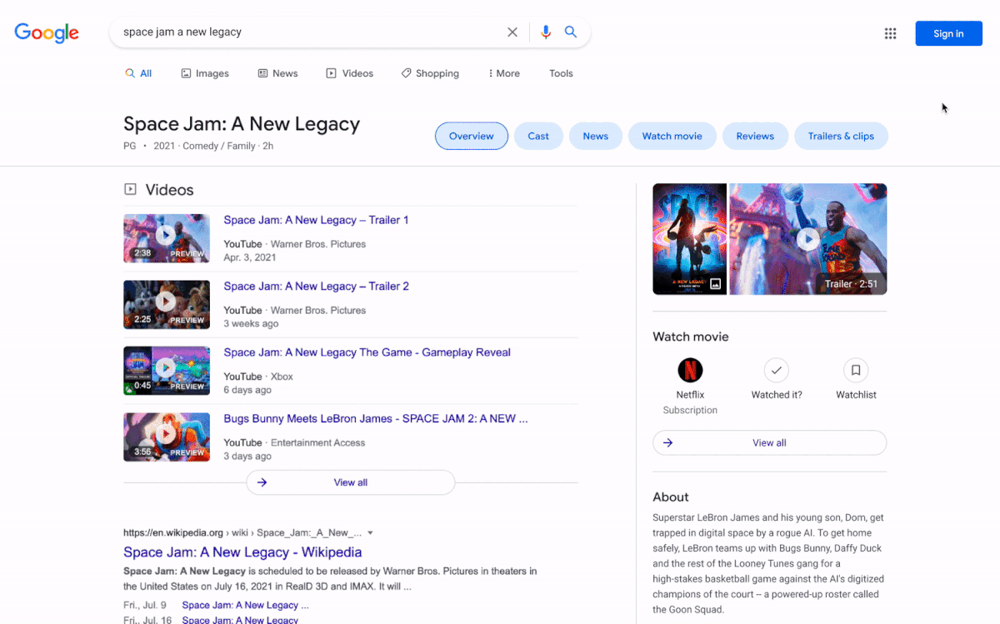
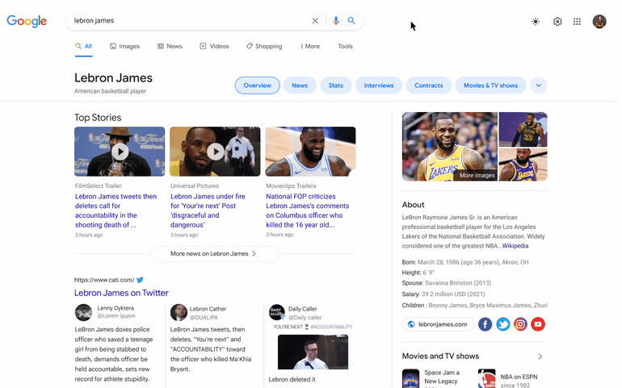
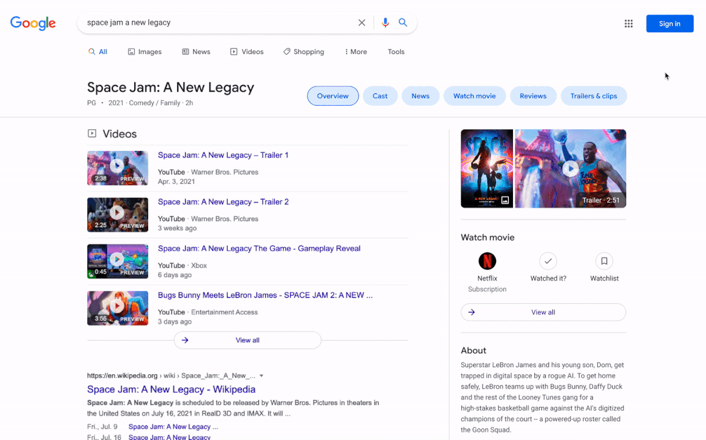
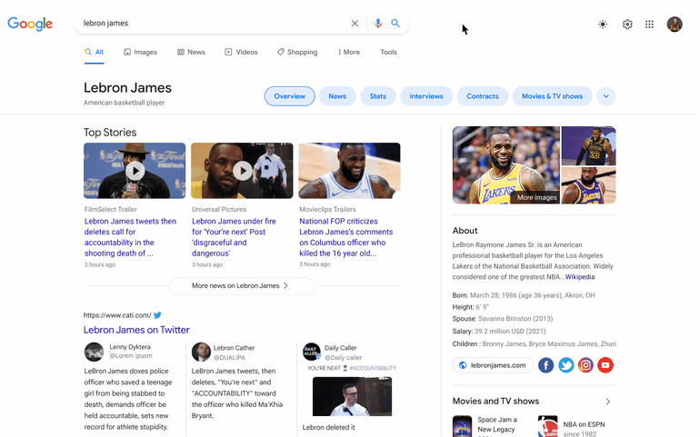
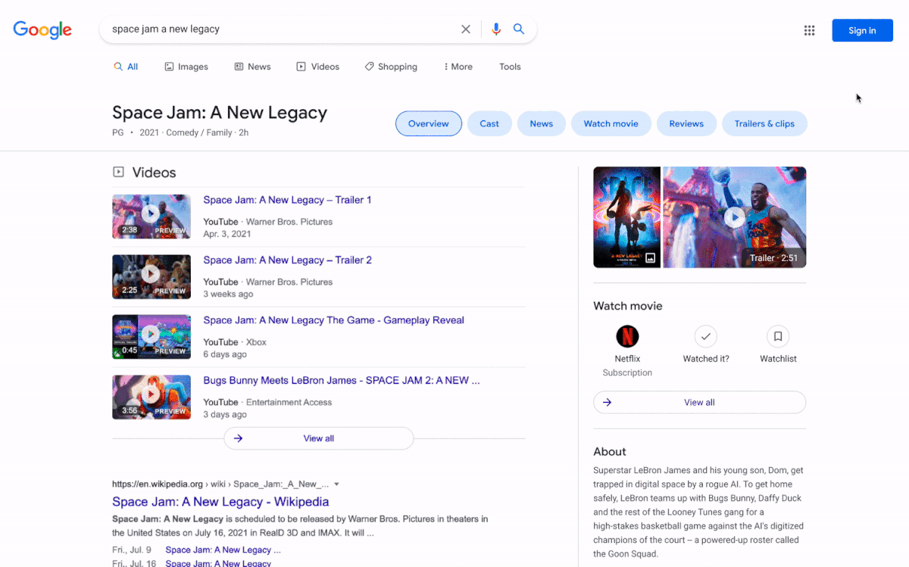
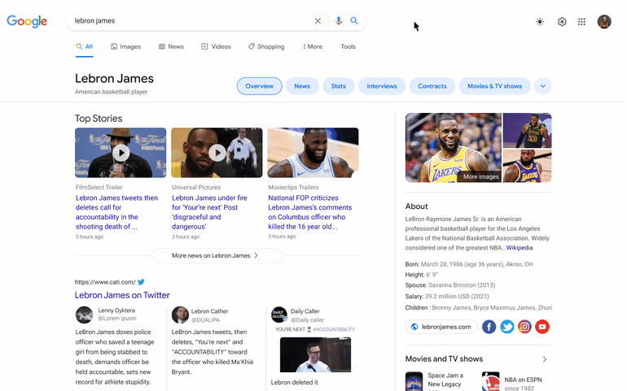

← GOOGLE SEARCH VISION
As more visually identical search engines populate the web, Google has been exploring ways to evolve Search's interface design. Instrument partnered with the Google Search team in a 3 week sprint of explorations that infuse stronger Google presence into the Search page and functionality.
During the sprint, we explored new layout variations and ways to emphasize the Google brand in bold and subtle ways through interactions. We also explored education tooltips as an avenue to showcase more of Google's more playful shapes and vibrant colors.
Agency: Instrument
Producer: Dennis Hanley
Creative Director: Dan Schechter
Designer: Rosalind Chang, Juliette Wang

